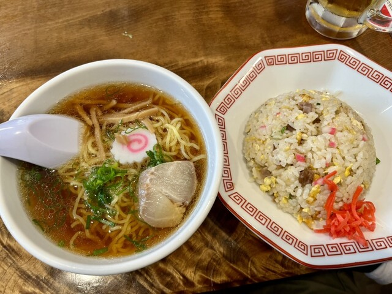

八福は、沼津駅南口の角地にある昔ながらの中華料理店。カウンターとテーブルのこぢんまりとしたレトロな店内で、地元の人に長く親しまれてきました。
看板は澄んだスープの中華そばとパラパラのチャーハン。深夜まで営業しているので、お仕事帰りや一杯のあとの〆にも重宝されています。
あっさり旨い、醤油の一杯。
餃子・エビチリ・野菜炒めなど。
沼津駅南口の角地で遅くまで。
おひとりでも、ご家族でも。沼津駅前の町中華で、ほっとするひとときを。